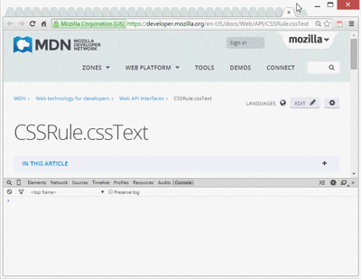

designr Extension 1.7
designr is a simple CSS property viewer for Google chrome originally made by Nicolas Huon as a FireFox addon.
 How to use :
Note that the menu will only show up when you enable designr and will only work on the page you're inspecting. Also, designr will only work on http, https and local pages. Privacy :In order to work properly, designr requires the permission to access to your history and website data. However, designr do not collect nor will ever transmit any of your private data. How to uninstall :
Known Issues:
designr will not work in any opened tabs before installing it nor in the Google chrome store.
The style may broke sometimes depending on the site you are surfing. designr automatically display this page when the extension is updated to a new version. This chrome extension is a straight port of the Firefox designr add-on with minor enhancements. Credits goes to the original developer and contributors. |